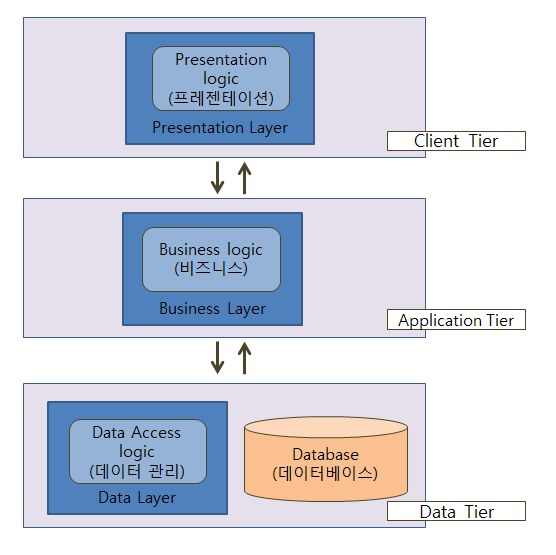
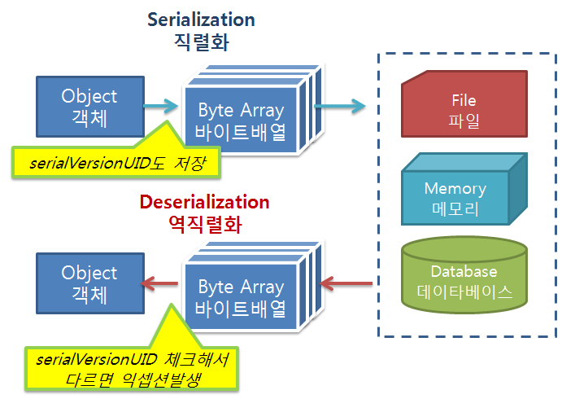
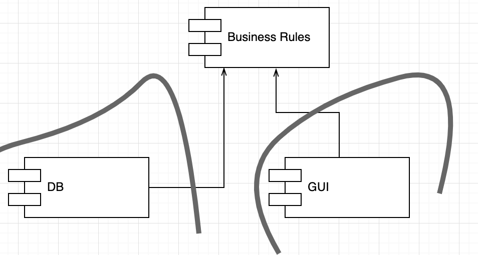
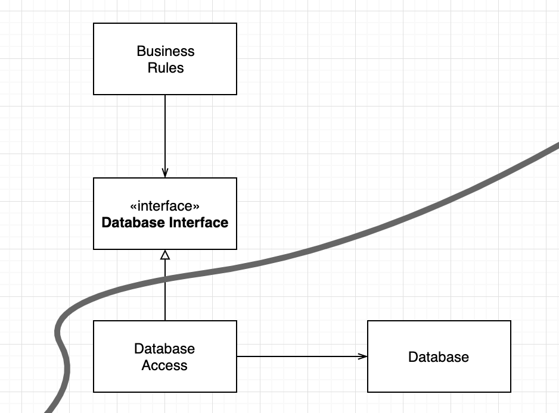
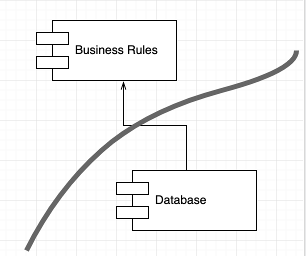
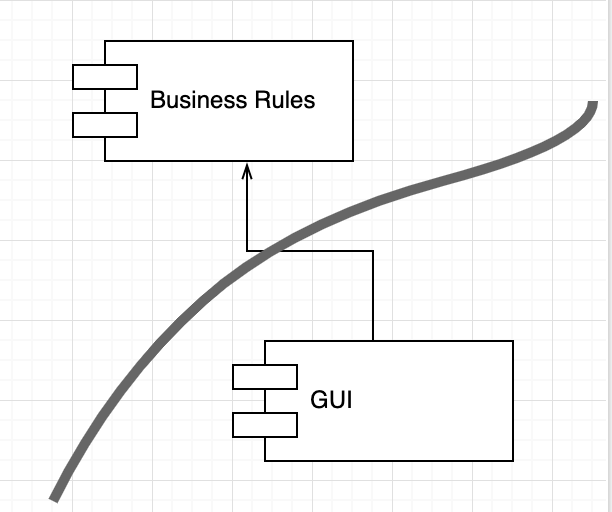
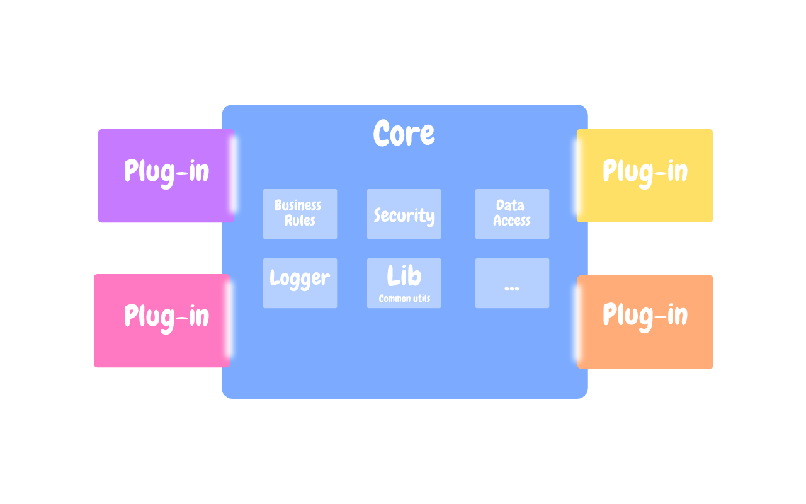

소프트웨어 아키텍처는 선을 긋는 기술이다. 이러한 선을 “경계” 라고 부른다. 경계는 소프트웨어 요소를 서로 분리하고, 서로 알지 못하도록 막는다.
아키텍트의 목표는 필요한 시스템을 만들고 유지하는데 드는 인적 자원을 최소화하는 것이다. 이러한 인적 자원의 효율을 떨어뜨리는 요인이 “결합” 이다. 특히 너무 일찍 내려진 결정에 따른 결합이다.
이른 결정이란 시스템의 업무 요구사항, 즉 유스케이스와 아무런 관련이 없는 결정사항이다. 예를 들어 프레임워크, 데이터베이스, 웹 서버, 유틸리티 라이브러리, 의존성 주입에 대한 결정 등이 있다.
좋은 시스템 아키텍처는 이러한 결정을 가능한 최후의 순간에 내릴 수 있게 해주며 결정에 따른 영향이 크지 않게 만든다.
적용 사례
사례 1

자사 제품을 웹 버전으로 변환하는 프로젝트를 진행한 P사의 프로그래머들은 3-티어로 구성된 리치 아키텍처를 채택했다. 또한 이를 서버 팜을 통해 분산하고자 했다. 이들은 모든 도메인 객체가 세 가지 인스턴스(GUI, 미들웨어, 데이터베이스 티어를 위해)를 가져야 한다고 이른 결정을 내렸다.
이를 위해 각 프로세서간, 티어간 통신이 필요했고 리치 시스템이 구성되었다. 티어 간 메서드 호출은 객체로 변환하여 직렬화 한 후, 회선을 통해 마샬링 되었다.
때문에 기존 레코드의 새로운 필드를 추가하거나, 간단한 기능을 수행할 때 비효율적인 수많은 절차와 기능을 수행하게 되었다.

또한 P사는 서버팜을 필요로 하는 시스템을 한번도 판매하지 못해 단일서버에서 실행된 파일이 객체 초기화, 직렬화, 마샬링, 언마샬링, 메세지 구성과 파싱, 소켓 통신과 같은 추가 작업들을 지속하게 되었다.
이는 아키텍처가 너무 이르게 결정을 내림으로써 개발 비용을 엄청나게 가중시킨 사례이다.
사례 2
W사의 경우 불필요한 엔터프라이즈급의 서비스 지향 아키텍처를 도입했다. 서로 다른 모든 객체들로 구성된 거대한 도메인 모델을 생성했고, 이들을 관리하기 위한 서비스들의 묶음을 설계했다.
결과적으로 필요하지도 않은 정보들을 가짜로 채워넣어야 했고, 비효율적인 기능과 배포를 동반했다.
W사의 실수는 SOA를 약속하는 일련의 도구들을 너무 일찍 채택하여 적용했다는 것이다. 거대한 일련의 도메인 객체 서비스를 너무 이른 시기에 채택했다.
사례 3
인수 테스트 작성을 위해 FIT 도구를 기반으로 하는 간단한 위키 페이지 프로그램 FitNesse의 경우가 좋은 예이다.
FitNesse
Fit
: 고객 입장에서의 테스트를 자동화하여 인력 투입을 줄이고자 만들어진 테스팅 프레임워크
FitNesse
: Fit에 위키를 결합하여 웹 서버 형태로 제공되는 오픈소스 인수 테스트 자동화 도구로, 공식 홈페이지에서 jar 파일을 내려 받아 설치나 설정 없이 간편하게 바로 웹 서버를 실행하여 사용할 수 있다.
FitNesse 개발 프로그래머들은 개발 초기 업무 규칙과 데이터베이스 사이에 경계선을 그었다. 이 경계선을 통해 업무 규칙은 데이터 접근 메서드 외에는 데이터베이스의 어떤 것도 알지 못했고, 초기 개발기간의 일년이 넘는 동안 데이터베이스를 선택하고 구현하는 일을 미뤘다.
경계선을 긋는 행위는 결정을 늦추고 연기하는데 도움을 주며, 궁극적으로는 시간의 절약을 가져왔다.
올바르게 선긋기
관련 있는 것과 없는 것 사이에 선을 긋는다.

- GUI <-> 업무규칙
GUI와 업무규칙은 관련 없기 때문에 그 사이에는 선이 있어야 한다.
- 데이터베이스<->GUI
데이터베이스는 GUI와는 관련이 없으므로 이 둘 사이에도 선이 있어야 한다.
- 데이터베이스<->업무규칙
데이터베이스는 업무규칙과 관련이 없으므로 둘 사이에도 반드시 선이 있어야 한다.

데이터베이스는 업무 규칙이 간접적으로 사용할 수 있는 도구이다. 업무 규칙은 데이터베이스와 관련된 세부사항(스키마, 쿼리언어등)에 관해 어떤것도 알아서는 안되며 그저 데이터를 가져오고 저장할 때 사용할 수 있는 함수 집합이 있다는 것이 알아야 할 전부이다.

Database는 BusinessRules에 대해 알고 있다. 반대로 BusinessRules은 Database에 대해 알지 못한다.
두 컴포넌트 사이에 경계선이 그어지고 화살표의 방향이 BusinessRules를 향하므로, BusinessRules에서는 어떤 종류의 데이터 베이스도 사용될 수 있다. Database 컴포넌트는 다양한 구현체로 교체될 수 있으며 BusinessRules는 조금도 개의치 않는다.
입력과 출력
입력과 출력은 중요하지 않다.
게임에서 화면이 전혀 출력되지 않더라도 모델은 게임에서 발생되는 모든 이벤트를 모델링 하면서 주어진 역할을 수행해야 한다. 중요한 것은 인터페이스 뒤에서 이를 조작하는 모델이다. 즉 중요한 것은 업무 규칙이다.
따라서 GUI와 BusinessRules 컴포넌트의 경계선을 분할해보면 다음과 같다. 관련성이 낮은 컴포넌트가 관련성이 높은 컴포넌트를 의존한다. GUI가 BusinessRules 를 신경쓴다. GUI는 다른 종류의 인터페이스로 교체 할 수 있으며 BusinessRules 는 전혀 개의치 않는다.

플러그인 아키텍처

소프트웨어 개발 기술의 역사는 플러그인을 손쉽게 생성하여, 확장가능하며 유지보수가 쉬운 시스템 아키텍처를 확립할 수 있게 만드는 방법에 대한 이야기이다. 수많은 컴포넌트로부터 핵심적인 업무규칙을 분리하고 독립적이게 만드는 것에 대한 것이다.
플러그인에 대한 논의
시스템을 플러그인 아키텍처로 배치함으로써 변경이 전파될 수 없는 방화벽을 생성할 수 있다.
위의 예로 본다면 GUI가 업무 규칙에 플러그인 형태로 연결되며 GUI에서 발생한 변경은 절대로 업무 규칙에 영향을 미칠 수 없다
경계는 “변경의 축”이 있는 지점에 그어진다. 경계의 한쪽에 위치한 컴포넌트는 경계 반대편의 컴포넌트와는 다른 속도로, 다른 이유로 변경된다.
결론
경계선을 그리기 위해선 시스템을 컴포넌트 단위로 분할해야 한다. 핵심 업무 규칙과 플러그인으로 분할 한 후 컴포넌트 사이의 화살표가 핵심 업무를 향하도록 컴포넌트 소스를 배치한다.
이는 의존성 역전 원칙과 안정된 추상화 원칙을 응용한 것으로 의존성 화살표는 저수준 세부사항에서 고수준의 추상화를 향하도록 배치된다.
출처
https://duehd88.tistory.com/entry/java-Mashalling%EA%B3%BC-Serialization%EC%9D%98-%EC%B0%A8%EC%9D%B4
https://multifrontgarden.tistory.com/186